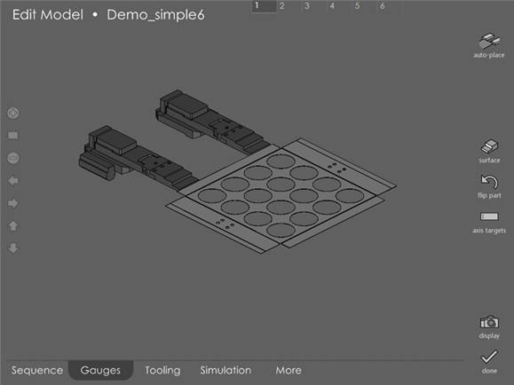
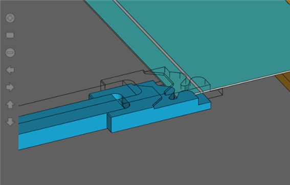
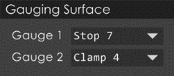
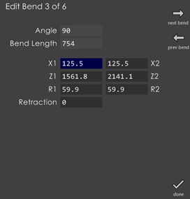

Back gauges
In this page, the back-gauges are displayed, and their position can be edited.

The gauges can be re-positioned simply by touching them and dragging them into a new position.
You can drag the gauges up against an edge or flange of the model. If you try to drag the gauges any further, the gauges will not move as they are already in contact with a flange or edge of the model. This is a very quick and intuitive way of positioning gauges precisely against any edge. If the gauges are firmly in contact with an edge like this, you will continue to see a ghost image of the gauge moving with your finger; though the actual gauges will be stopped at the point there they contacted the edge:

Menu options
Auto-place
Touching this button commands to re-compute automatic positions for the gauge. If the gauges are moved into some unacceptable location, and if this needs to be fixed automatically, simply touch this button. If you keep on touching, this will cycle through all possible positions for the gauge.
Surface
Clicking on the surface button brings up a small window (see picture below) that allows you to choose between different gauging surfaces. As you change the selection in this window, the gauges are immediately re-positioned and collisions, if any, are reported.

Axis Targets
Tapping the axis targets button brings up a dialog (see picture below) similar to that of axis targets in the More page.

Use the Retraction field in the dialog to type in a different gauge-retraction value.
| While touching the Auto-place button, the pullback is also computed automatically. |
You can edit the gauge positions dimensionally by typing in values for Z, X and R. If the machine has some restrictions on independent movement of gauges, the edit boxes are suitably modified. If there are 4 gauges, the dialog would be wider, having columns for gauges 3 and 4. Once you press done, the gauge position is updated, and collision and engagement checks are done. The commands next bend and prev bend are used to navigate through the bends.
Flip part
Touch this button to insert other side of the part into the machine.
Normally the shorter flange will go into the machine if it is possible to use that side to reference the gauges. However, in some situations touching this button will rotate the part around 180 degrees.